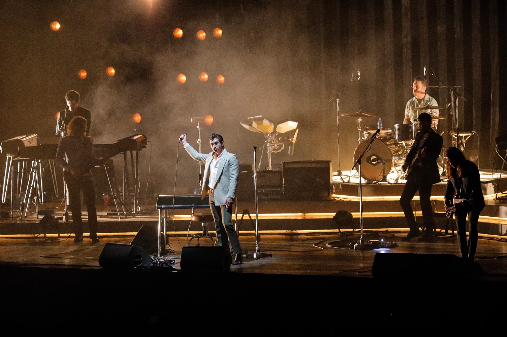
Arctic Monkeys
Arctic Monkeys se presentó en Lollapalooza Chile 2019 el domingo 31 de marzo de 2019 en el Parque O'Higgins de Santiago. Presentando su disco Tranquility Base Hotel & Casino.
Los Bunkers
“Una nube cuelga sobre mí” es una famosa colaboración musical y en video entre el grupo chileno Los Bunkers y el popular programa infantil 31 Minutos.
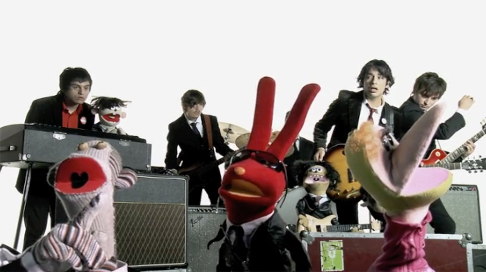
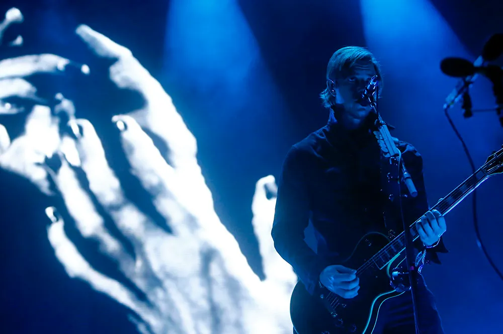
Interpol
Interpol se presentó en Lollapalooza Chile 2015 para promocionar su disco El Pintor y repasar clásicos de su carrera.
Mac DeMarco
Mac DeMarco se presentó en el Coachella Festival 2015 los domingos 12 y 19 de abril de 2015 en el Empire Polo Club de Indio, California.
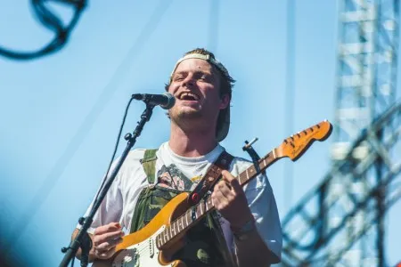
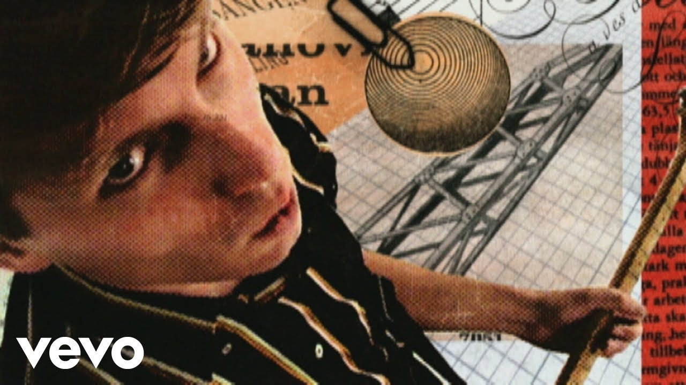
Franz Ferdinand
videoclip oficial de «Take Me Out» uno de los videos más icónicos y premiados de la década de 2000 por su innovadora propuesta visual.
Enjambre
El concierto de Enjambre en el Palacio de los Deportes de la Ciudad de México se realizó el 29 de agosto de 2015 como el cierre de su exitosa Gira Proaño
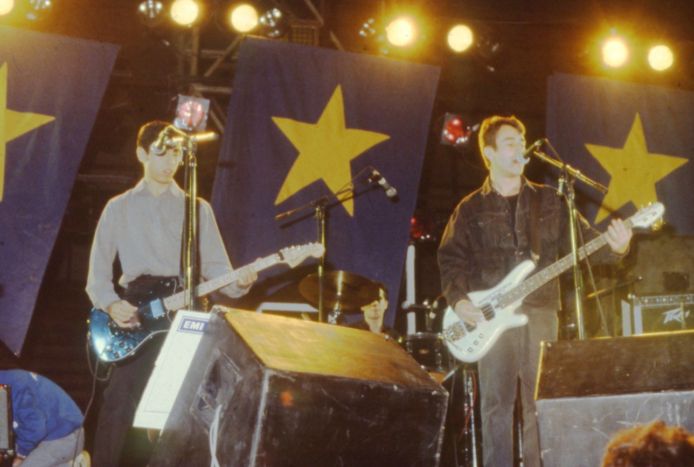
Los Prisioneros
Los Prisioneros durante la gira de La cultura de la basura.
Ases Falsos
Concierto de Ases Falsos celebrando los 10 años de su disco Juventud Americana se realizó el 2 de diciembre de 2023 en el Teatro Caupolicán.
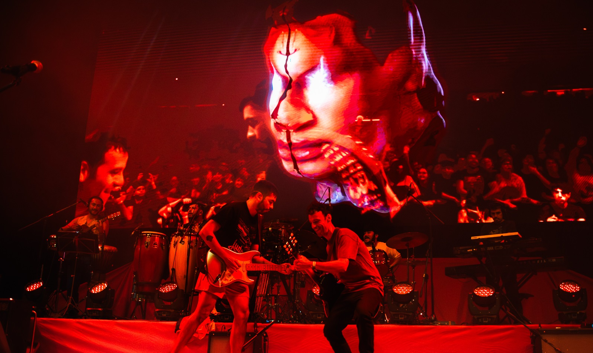
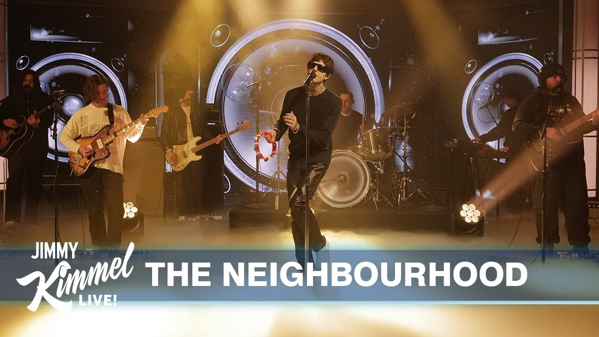
The Neighbourhood
The Neighbourhood se presentó en Jimmy Kimmel Live! el 24 de noviembre de 2025 para promocionar su álbum [[[[[ultraSOUND]]]]].
Twenty One Pilots
Twenty One Pilots cerró la segunda jornada de Lollapalooza Chile 2019 el sábado 30 de marzo en el VTR Stage del Parque O'Higgins.
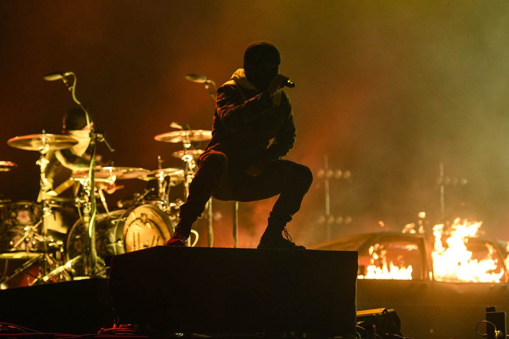
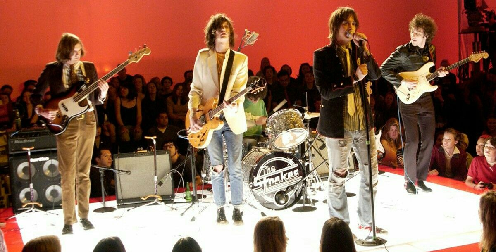
The Strokes
El concierto MTV $2 Bill de The Strokes es una de las presentaciones en vivo más icónicas y legendarias del indie rock de los años 2000
Cage the Elephant
El video oficial de "Social Cues" de Cage The Elephant fue lanzado el 24 de octubre de 2019 para promocionar el tema principal de su quinto álbum de estudio
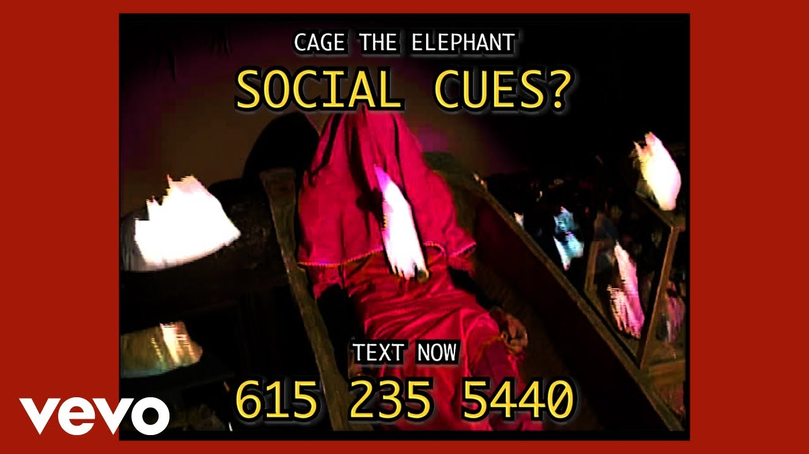
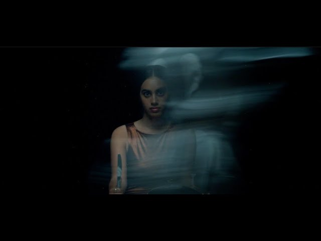
Crumb
El video oficial de «BNR» de la banda Crumb fue lanzado el 7 de abril de 2021 como parte de su álbum Ice Melt.
Arcade Fire
El video musical oficial de "The Suburbs" de Arcade Fire fue estrenado en noviembre de 2010 y dirigido por el aclamado director de cine Spike Jonze.
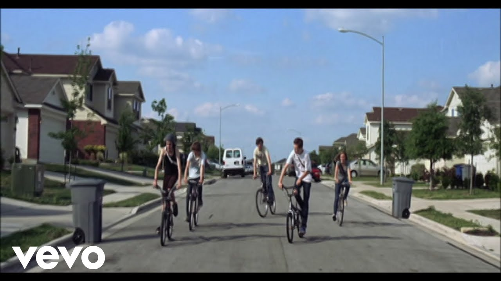
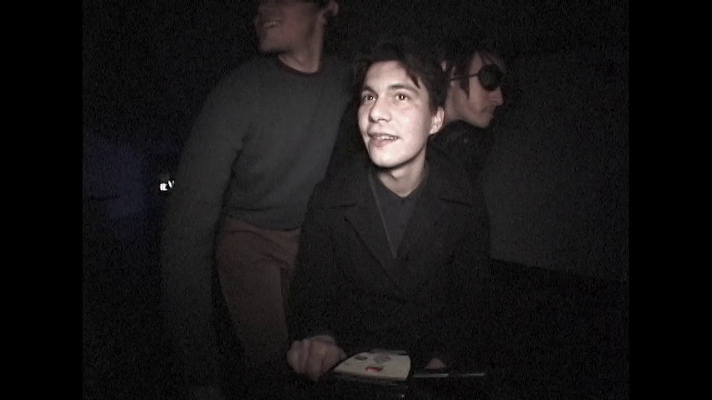
The Buttertones
El videoclip oficial de "Fade Away Gently" de la banda de Los Ángeles The Buttertones fue lanzado en marzo de 2020 como el segundo sencillo de su quinto álbum de estudio, Jazzhound.
Fontaines D.C
Fontaines D.C. dio su concierto más multitudinario hasta la fecha el 5 de julio de 2025 en el Finsbury Park de Londres, congregando a unas 45.000 personas.
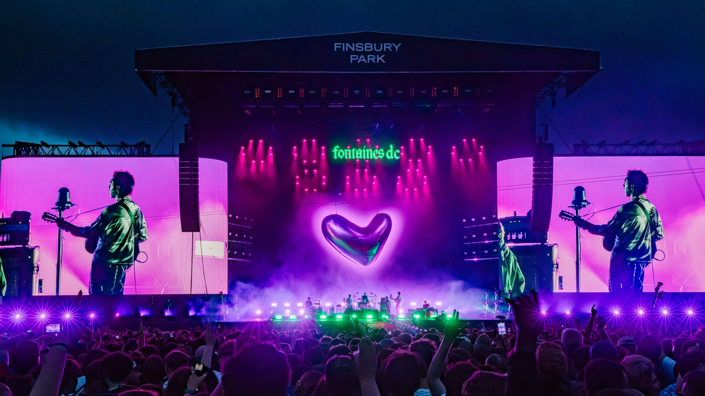
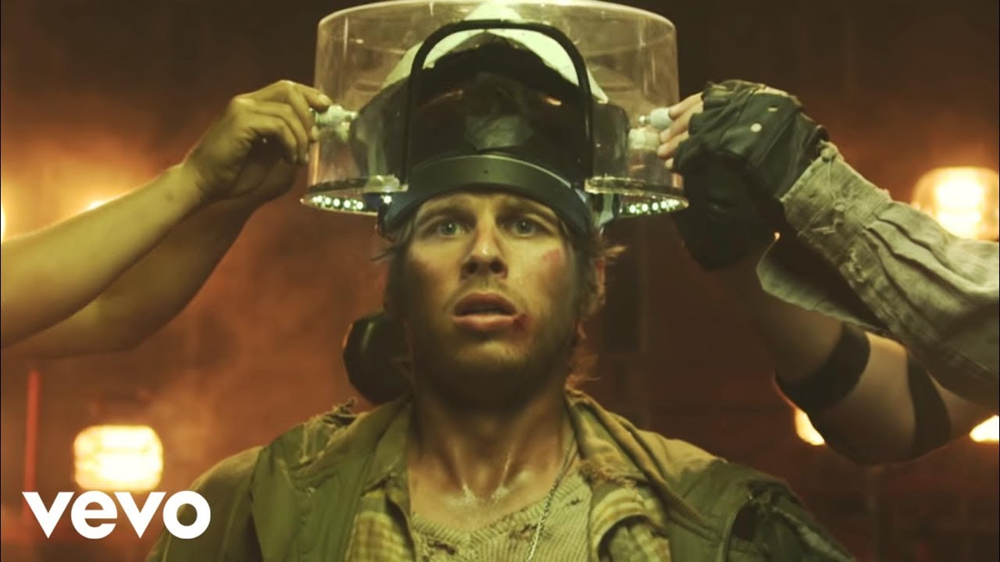
Foster the People
Conversación en el Modo IA: foster the people helena beat videofoster the people helena beat videoEl video oficial de "Helena Beat" de la banda Foster the People fue lanzado en julio de 2011 como el segundo sencillo de su exitoso álbum debut Torches.
The Growlers
El videoclip oficial de "Rubber & Bone" fue estrenado el 31 de marzo de 2017. Fue dirigido por George Trimm y destaca por plasmar visualmente el mensaje de crítica social de la canción.
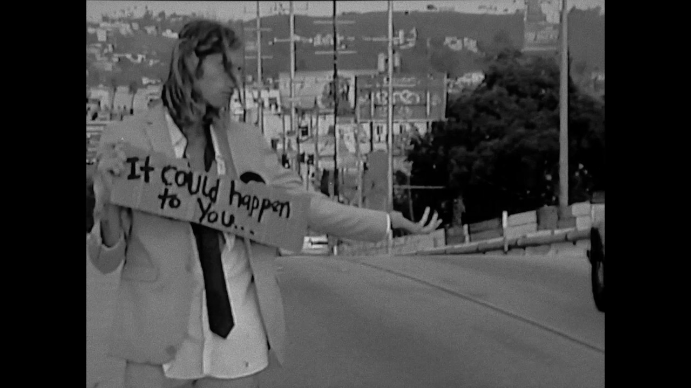
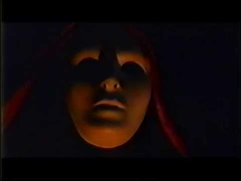
Inner Wave
El video musical oficial de la canción «American Spirits» de la banda Inner Wave fue lanzado en febrero de 2014.
Margarita Siempre Viva
El video oficial de Fractal fue lanzado por la agrupacion Margarita Siempre Viva l 23 de marzo de 2023.
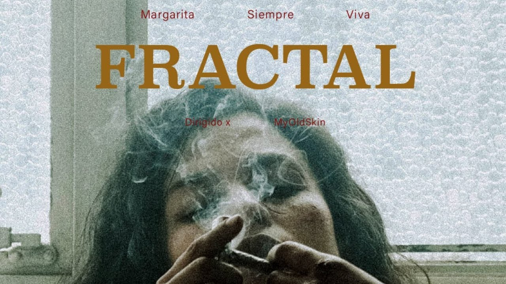